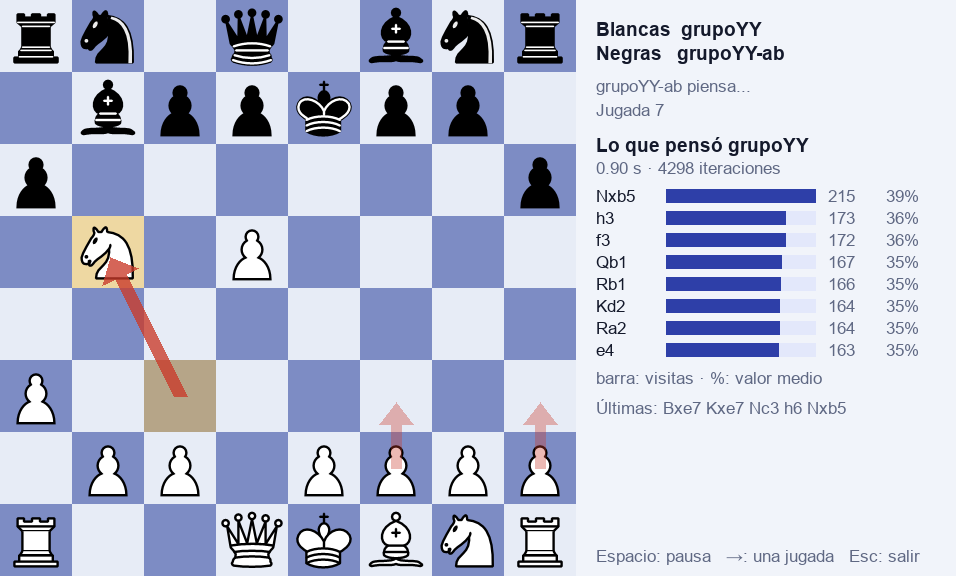

Qué se pide
Esta vez el entorno cambia: dejamos Ms. Pac-Man y pasamos al ajedrez, un juego por turnos, con dos jugadores, sin azar y en el que se ve todo el tablero. Es el terreno de los algoritmos que simulan el futuro en vez de razonar sólo sobre el presente, como hacían las reglas o la lógica borrosa. Las reglas del ajedrez las pone la biblioteca python-chess [1]; vosotros escribís quién decide.

| Parte | Qué es |
|---|---|
| 1 y 2 · La guía | Los dos jugadores, montados con la guía paso a paso: minimax con alfa-beta en tres pasos y MCTS en seis, cada uno con su comprobación. Igual para todos los grupos, y con la solución plegada. |
| 3 · Experimentos | Tocar los dos jugadores y medir qué pasa: la profundidad de alfa-beta, los mandos del MCTS (la profundidad de la simulación, la constante c, el tiempo) y una heurística. Al menos uno con cada algoritmo. |
| 4 · Retos | Mejoras a vuestra elección, de los diez retos de la guía o vuestras, intentadas y medidas. No hace falta que salgan bien. |
| Unas notas | Un notas.md con una o dos líneas por experimento y por reto: qué probasteis y qué salió. Nada más. |
Leed en los apuntes del tema 5 las páginas de juegos por turnos (minimax y alfa-beta) y de Monte Carlo Tree Search, y después seguid la guía con su carpeta descargada y abierta en VS Code.
La guía y los apuntes
- Práctica 5 paso a paso Guía · todo lo que hay que hacer Instalar Python y VS Code, alfa-beta y MCTS paso a paso con su comprobación, cómo verlos jugar y medirlos, los experimentos y los diez retos.
- Juegos por turnos Apuntes · tema 5 Árboles de juego, minimax y alfa-beta, MCTS con ejemplos para tocar, y sus parámetros y mejoras.
Cómo se evalúa
Por partes, sumando puntos. La guía da 5, los retos otros 5, y el concurso, un punto extra:
| Parte | Cuándo cuenta | Puntos |
|---|---|---|
| 1 · Alfa-beta | Los pasos A1, A2 y A3 en BIEN. | 2 |
| 2 · MCTS | Los pasos M1 a M6 en BIEN. | 2 |
| 3 · Experimentos | Al menos uno con cada algoritmo, apuntado en las notas. | 1 |
| 4 · Retos | Cada reto es una misión con su cristal: dorado (difícil), 5 puntos; violeta (fácil), 2,5; azul (muy sencillo), 1,75. Cuentan como mucho tres, y entre todos no pasan de 5. El color de cada uno está en la guía. | hasta 5 |
| Concurso | Según lo cerca que quede vuestro jugador del primero en el concurso. La nota no pasa de 10. | +1 como mucho |
Con un dorado o dos violetas se llega a los 5 puntos de los retos. Un reto cuenta si está probado, medido y apuntado en las notas, aunque no mejore nada. Si queréis hacer uno vuestro, preguntadme antes de qué color es.
Reglas del jugador
| Regla | Qué quiere decir |
|---|---|
| Decide vuestro código | Vuestro MCTS, vuestro minimax con alfa-beta o una mezcla de los dos, escritos por vosotros a partir de la guía. Los rivales de la carpeta ajedrez/ no valen como jugador. |
| Sólo Python y python-chess | La biblioteca estándar y chess. Nada más que haya que instalar. |
| Nada de fuera | Ni motores externos (Stockfish o cualquier otro, tampoco con chess.engine), ni libros de aperturas, ni tablas de finales descargadas, ni red. El conocimiento de ajedrez que tenga vuestro jugador lo escribís vosotros. |
| Ni hilos, ni procesos, ni ficheros | El jugador piensa en el hilo en el que se le llama, y no lee ni escribe ficheros. |
| Sin estado global | Todo lo que haya que recordar entre jugadas (un árbol reutilizado, por ejemplo) va en atributos del objeto, no en variables del módulo. comparar.py juega muchas partidas seguidas en el mismo proceso. |
| El tiempo | elegir recibe el tiempo de esa jugada como argumento: usadlo en vez de escribir el número. En el concurso, con el reloj de partida, ese tiempo puede bajar al final. |
Concurso
Esta vez también hay concurso. Cuando acabe el plazo juego una liguilla de todos contra todos con el jugador
que entreguéis (el que crea jugador()): cada pareja de grupos juega cuatro aperturas de
comparar.py, cada una con blancas y con negras, así que son ocho partidas por pareja. Victoria
1 punto, tablas ½, y gana el grupo que más puntos sume.
Los límites
| Límite | Cuánto | Si os pasáis |
|---|---|---|
| Por jugada | 1 s: el tiempo que recibe elegir. | Una jugada que tarda más de 1,5 veces su tiempo pierde la partida. |
| Por partida | 60 s de reloj para cada jugador, sumando lo que tardan todas sus jugadas. Cuando os queda menos de 1 s, tiempo es lo que os queda. | No perdéis, pero desde ahí cada jugada recibe 0,05 s hasta el final, que da para muy poco. |
| Largo de la partida | 200 medias jugadas desde la apertura (100 de cada uno). | Gana quien tenga 3 o más puntos de material de ventaja; si no, tablas. |
| Jugada ilegal | Ninguna. | Pierde la partida. |
| Excepciones | Ninguna. | Fuera del concurso, aunque sea en una sola partida: el concurso se juega en paralelo y no repito partidas. |
| Entrega tarde | Hasta 12 horas. | Desde 12 horas de retraso, fuera del concurso. |
Lo nuevo es el reloj de partida. Esto significa que no os da para pensar 1 s en todas las jugadas: si la partida llega al final, son 100 jugadas vuestras con 60 s para todas, así que de media
El MCTS de la guía gasta el 90 % del tiempo que recibe, 0,9 s por jugada, y se queda sin reloj en
De ahí al final juega casi a ciegas, y es justo cuando hay que rematar la partida. Esto es así para que repartir el tiempo cuente (de eso va el reto Gestionar el tiempo): ahorrar en las jugadas fáciles para gastarlo en las que lo merecen.
Cada partida empieza con un jugador() nuevo, así que podéis guardar en atributos del objeto
cuánto lleváis gastado (con time.perf_counter() al entrar y al salir de elegir)
y cuántas jugadas lleváis. Con eso sabéis cuánto reloj os queda y cuántas jugadas os pueden faltar como mucho.
Probadlo antes
Volved a descargar ICI-Practica5.zip y
copiad su carpeta ajedrez/ encima de la vuestra (no tiene nada vuestro): es la que trae el
reloj. Después, en vuestro comparar.py, poned TIEMPO = 1 y
MAX_MEDIAS = 200, y añadid reloj=60 a la llamada a jugar de
una_partida. Con eso las partidas se juegan como en el concurso. Tardan bastante más (cada
una puede llegar a los dos minutos), así que con dos o tres aperturas basta.
El punto extra
Como en las otras prácticas, un punto sobre la nota, según lo cerca que quedéis del primero. Si llamamos mía al porcentaje de puntos de vuestro grupo, y mejor y peor a los del primero y el último:
El primero se lleva el punto entero, el último 0 y los de en medio, en proporción. La nota de la práctica no pasa de 10. Los casos raros (empates, quién no entra en la escala) son los de la guía de la competición.
Cómo trabajar
La guía
Descargad ICI-Practica5.zip, abrid la
carpeta en VS Code, cread el entorno y haced las dos primeras partes de la
guía, hasta que Comprobar todos los pasos
dé los nueve en BIEN. Poned vuestra letra en la carpeta grupoYY y en los
import de los cuatro programas que la usan.
Experimentad
Con la tercera parte de la guía: cada experimento,
una versión más en VERSIONES y una pasada de comparar.py. Apuntad en las notas qué
salió.
Los retos
Mirad partidas con Ver partida y jugando vosotros, buscad algo concreto que hagan mal, y elegid un reto que lo ataque, o inventad el vuestro. Uno difícil, dos fáciles o tres muy sencillos. Hacedlo en una versión nueva sin borrar la anterior, y medidla contra la anterior: contra los rivales de referencia y, si hace falta, enfrentadas directamente. Si no sale, contad por qué creéis que no ha salido.
Vuestra versión
La que mejor os haya ido, sea de MCTS, de alfa-beta o una mezcla: jugador() en
grupoYY/__init__.py la crea, y es la que juega el concurso.
Comparar versiones
comparar.py juega cada versión de VERSIONES contra cada rival de
RIVALES, desde las aperturas de APERTURAS y con los dos colores, y al acabar saca
una tabla. No tiene opciones que pasarle: lo que se cambia está arriba del fichero, en MAYÚSCULAS. Se puede
lanzar de dos formas:
- Desde VS Code: en Ejecutar y depurar (Ctrl+Shift+D / Cmd+Shift+D) elegid Comparar versiones en el desplegable y pulsad F5.
- Desde una terminal, dentro de la carpeta
ICI-Practica5y con el entorno activado (si trabajáis con Jupyter, es la única forma):
source .venv/bin/activate # Mac y Linux
.venv\Scripts\activate # Windows
python comparar.py| En el fichero | Qué es |
|---|---|
VERSIONES | Las vuestras, cada una con un nombre corto y un lambda que la crea. Son las filas de la tabla. |
RIVALES | Contra quién juega cada versión. Son las columnas. Vienen Aleatorio, Voraz y AlfaBeta2, pero vale cualquier jugador, también uno vuestro. |
APERTURAS | Desde dónde empieza cada partida. Cada apertura son dos partidas por pareja, una con cada color, así que con las ocho que vienen salen 16. |
TIEMPO | Segundos por jugada. Con 0,3, que es lo que viene, una partida tarda como mucho medio minuto; con 1 se parece más al concurso, pero tarda el triple. |
Enfrentar dos versiones, paso a paso
A modo de ejemplo, la misión El rival también elige: una
versión nueva del MCTS, MCTSRival, contra el MCTS de la guía.
La versión nueva
Una clase hija debajo de la original, en el mismo fichero (grupoYY/mcts.py), que cambia sólo
lo que pide la misión. La anterior no se toca, que hace falta para compararlas.
class MCTSRival(MCTS):
def seleccionar(self, nodo):
... # vuestra versiónImportadla
Arriba de comparar.py, junto a la que ya estaba (con vuestra letra en vez de YY):
from grupoYY.mcts import MCTS, MCTSRivalUna a cada lado
La nueva en VERSIONES y la anterior en RIVALES. Los rivales de referencia, de
momento, comentados con #, para que vaya más rápido: con un solo rival son 16 partidas.
VERSIONES = {
"mcts-rival": lambda: MCTSRival(),
}
RIVALES = {
# "Aleatorio": lambda: Aleatorio(),
# "Voraz": lambda: Voraz(),
# "AlfaBeta2": lambda: AlfaBeta(2),
"MCTS guía": lambda: MCTS(),
}
Para dos alfa-beta es igual: "ab3": lambda: Minimax(profundidad=3) en
VERSIONES y "ab2": lambda: Minimax(profundidad=2) en RIVALES.
Lanzadlo
Desde VS Code o con python comparar.py. Al empezar dice cuántas partidas son y lo que puede
tardar, va contándolas y, al acabar, sale esto:
MCTS guía TOTAL
mcts-rival 66% ±24 (10-1-5) 66% ±24Leed la casilla
La fila es la versión y la columna, el rival: MCTSRival ha sacado el 66 % de los puntos
contra el MCTS de la guía, con 10 ganadas, 1 tablas y 5 perdidas. Un 50 % sería que juegan igual.
Falta saber si ese 66 % es de verdad o ha sido suerte, y para eso está el ±24 (justo abajo).
Y contra los de siempre
Quitad los # de los rivales de referencia y poned la anterior también en
VERSIONES ("mcts": lambda: MCTS()). Salen las dos filas una debajo de la otra,
y se ve si la nueva ha empeorado contra Voraz o AlfaBeta2 sin daros cuenta.
¿Es suerte?
Cada casilla lleva el porcentaje de puntos y un margen de dos errores típicos. Llamamos al porcentaje y al margen: el resultado de verdad está, casi seguro, entre
y . En la casilla de MCTSRival contra el MCTS de la guía, en 16 partidas:
El 50 % queda dentro del intervalo, así que no está demostrado que el reto mejore el MCTS: va en la
dirección que se esperaba, y nada más. Para saberlo hacen falta más partidas (podéis añadir aperturas a
APERTURAS). Una versión que pase del 0 al 30 % contra AlfaBeta2, en cambio, sí ha demostrado
algo. Y "no se nota" también vale como resultado.
Reglas de entrega
Esta práctica se hace en grupos de 3 o 4 estudiantes y se entrega en una tarea del Campus Virtual antes del domingo 29 de noviembre a las 23:59:
| Qué | Cómo exactamente |
|---|---|
| Archivo | practica5-grupoYY.zip, donde YY es la letra de vuestro grupo. |
| Paquete | La carpeta grupoYY, con vuestra letra en el nombre, con todo vuestro código dentro: los dos jugadores de la guía y todas las versiones, no sólo la última. |
| Vuestro jugador | La función jugador() de grupoYY/__init__.py: sin argumentos, crea vuestra versión con nombre="grupoYY". |
| Importaciones | Vuestra carpeta se probará al lado de la carpeta ajedrez/ original. Del entorno, from ajedrez import …; entre vuestros ficheros, con un punto: from .mcts import MCTS. |
| Raíz del zip | La carpeta grupoYY y, a su lado, el notas.md. |
La carpeta ajedrez/ no se toca, y la entrega no la incluye, ni tampoco
comparar.py, comprobar.py ni la carpeta .venv. Cumpliendo esto,
dentro de grupoYY podéis crear los ficheros y las clases que queráis.
Todas las prácticas serán comprobadas para la detección de plagios.
Antes de subir el zip
- La carpeta se llama
grupoy vuestra letra, yjugador()lleva ese mismo nombre. - En una carpeta limpia con sólo
ajedrez/y vuestragrupoYY/,python -c "import grupoYY; print(grupoYY.jugador().nombre)"funciona. - Ningún
printde depuración dentro deelegir: cuesta tiempo en cada jugada. - Ni hilos, ni ficheros, ni variables globales que cambien durante la partida.
- Unas cuantas partidas completas sin excepciones.
- Al abrir el zip aparecen
grupoYY/ynotas.mden la raíz, y nada deajedrez/,.venvni__pycache__.
Referencias
- N. Fiekas. python-chess: a chess library for Python. documentación, 2026. python-chess.readthedocs.io ↩